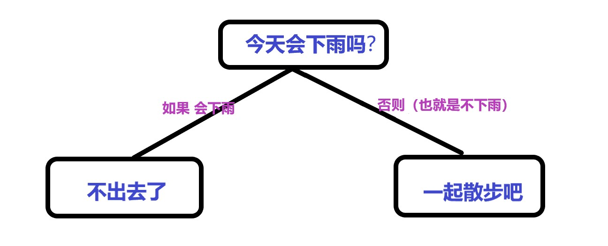
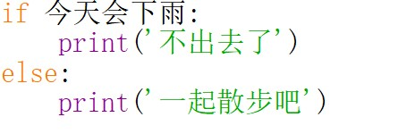
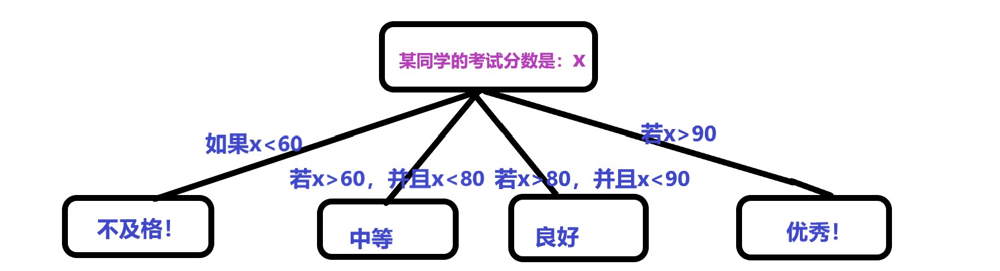

分支循环，效率加速器-Python基础连载（八）
开篇
你可能已经发现，前面的七期内容有一个共同的特点，那就是偏向理论基础，似乎学完之后只是了解了一些实用的方法，比如字符串如何进行增删改查，如何交互实现输入输出，Python运算符的种类等等。
此刻的你，是不是一点也没有感受到程序带来的效率翻倍？
今天就来填补这个大坑，一起来学习分支和循环吧！
分支
所谓分支，可以形象的理解为一棵树的分叉：

满足哪个条件，就往哪个分叉方向前进。
写成Python伪代码的格式如下：

这便是最简单的分支结构：if...else...
还记得之前讲的缩进吗？在这里，:之后按回车键就会自动缩进了，一个缩进相当于按一次Tab键
缩进的存在，使得Python代码的可读性更强。
再举两个栗子来练习一下，建议小白同学手动敲一遍：
【栗子1】数字比较
1 | x=1 |
输出：
1 | x比y小！ |
【栗子2】年龄验证
1 | age=input('请输入你的年龄：') |
输入18：
1 | 请输入你的年龄：18你好！欢迎光临！ |
输入12：
1 | 请输入你的年龄：12未成年人禁止入内! |
需要注意：
:后面缩进的内容是一个整体，比如【栗子2】中的print('你好！')和print('欢迎光临！')
但是，如果某一个问题的答案并不是单纯的为**是或者否**，而是有多于两种的答案，那么上面所讲的if ... else...分支语句就无能为力了。
于是多分支结构出现了！
同样是小树分叉的形式：

图中的栗子写成可以运行的Python代码如下：
1 | x=input('请输入某同学的考试分数：') |
运行及结果：
1 | 请输入某同学的考试分数：99优秀！ |
这种多分支结构采用了elif关键字，它的全称是else if，意思是在否定它上面的条件之后，同时又满足它自身的条件时，就执行它所对应的缩进块内的代码。
在上面的栗子中，假设x=99，我们一起走一遍：
1 | 检查if语句，发现if后面的x<60不满足，因此跳转到if下面紧邻的第一条elif语句 |
以上便是基本的分支结构包含的知识点。
这里再说一下嵌套的分支结构，也就是if里面包裹着if，直接上栗子：
1 | x=1 |
输出结果：
1 | x<y<z |
解释：在第一个if中,满足x，于是继续向下执行第二个if语句（此时已经是在满足x成立的前提下进行的），条件y也满足，于是打印输出x。
你可能也发现了，最后一个条件不必须是else，可以没有，当然也可以是elif。这一点在今后的编程中你将逐渐体会。
循环
在Python中，循环有两种，一种是while循环，另一种是for循环。
while循环
while后面跟一个条件表达式，只要条件满足，就一直执行while里面缩进的代码块。举个例栗子：
1 | x=1 |
这个栗子用来求解1到10之和。
首先，初始化x为1，用于存放求和结果的变量sum被初始化为0。
只要条件表达式x<=10满足，那么就一直执行while所包裹的缩进的内容，也就是
1 | sum+=x |
x从1开始，每运行一次，x就加1，最终x变为11，此时不再满足条件x<=10，于是退出while循环，打印求和结果，程序运行结束。
for循环
for循环的结构为
1 | for 迭代变量 in 可迭代对象: |
我们目前所学习到的可迭代对象只有字符串，因此这里便先用字符串举例子了。
1 | word='Python' |
输出
1 | P |
现在来使用for循环求1到10之和：
1 | sum=0 |
输出
1 | 1+2+3+...+10= 55 |
这里使用到了range()函数，它用于生成左闭右开的一个数字序列，具体用法如下：
1 | range(start,end,step) |
其中，
start：开始的数字
end：结束的数字+1
step：步长
start和end必须是整数(可正可负)，step无限制
如果不写步长值step，则默认步长为1
如果不写开始值start，默认从0开始 ,此时不能指定step，否则逻辑会出错
看几个栗子：
【栗子1】不写step，则默认为1
1 | x=range(1,4) |
输出
1 | 1 |
【栗子2】不写start，默认从0开始
1 | x=range(4) |
输出
1 | 0 1 2 3 |
【栗子3】写step
1 | x=range(4,2,-1) |
输出
1 | 4 |
你甚至可以像操作字符串那样对range()生成的对象按照下标访问，也可以做切片（只是返回的仍是可迭代对象）：
1 | x=range(1,10) #[1,9] |
说了这么多，你应该已经很清楚，在求1到10之和的for循环程序中，range(1,11)得到的是一个从1到10的可迭代对象。通过for循环，依次取出可迭代对象中的每一个值，加到sum中，最后打印sum即为所求。
break和continue
这两个用于循环中，用来控制循环的走向。
break：直接跳出循环，不再运行循环体内的代码块
continue：只结束本次循环，不会再执行continue语句之后的代码，而是转而从头开始运行循环体内的代码块
举两个栗子来对比这两者：
【栗子1】 break的用法
1 | sum=0 |
输出
1 | 15 |
解释：当i变为6时，满足if条件，于是执行break语句，跳出整个循环。
所以，上面的代码的作用是求解1+2+3+4+5的和，也就是15。
【栗子2】continue的用法
1 | sum=0 |
输出
1 | 16 |
解释：当i=5时，满足if条件，所以会直接进入下一次循环。所以，上面代码的作用就是求解1+2+3+4+6之和，也就是16。
补充while循环和for循环的另一种用法：while …else…与for …else …
不管是在while ...else...中，还是在for ...else ...中，只要循环体内的代码是正常执行完之后跳出的循环，那么都会执行else中的代码。但是，如果循环是被break强行终止的，那么抱歉，此时else中的语句会被忽略掉。
这里就以while ...else...为例进行演示：
【栗子1】循环体内没有写break，正常结束循环，于是会执行else中的代码
1 | x=1 |
输出
1 | x= 1 |
【栗子2】循环体内写了break语句，但是break语句并没有被执行，因此也会执行else中的代码
1 | sum=0 |
输出
1 | 程序正常结束21 |
【栗子3】循环体内写了break语句，并且触发了break语句，循环被迫终止，所以此时不会执行else中的代码
1 | sum=0 |
输出
1 | 15 |